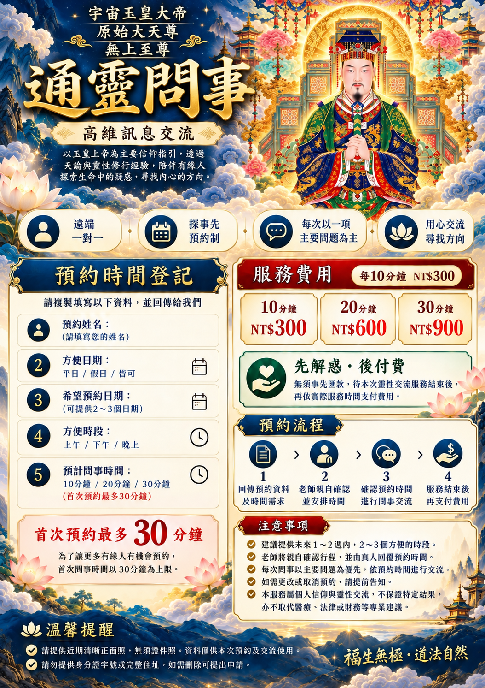

直播收驚
無形干擾調理
隨喜功德透過直播進行收驚祈福、安定心神及無形干擾相關的靈性儀式。
服務與費用
通靈問事每 10 分鐘 NT$300，20 分鐘 NT$600，30 分鐘 NT$900。首次最多 30 分鐘，以主要問題為優先；先解惑，服務結束後再付費。
透過直播進行收驚祈福、安定心神及無形干擾相關的靈性儀式。
年度補財庫，祈求財運順遂、事業平安與福運增長。
透過懺悔、祝禱與迴向等宗教儀式，祈求化解宿世恩怨、促進內心平和。
儀式服務請先透過 LINE 洽詢內容與安排；不保證特定財運、健康或其他實際結果。
完整服務圖卡

預約流程
選擇10、20或30分鐘，再從行事曆選擇可用時段。
網站登記後會暫留時段，請將預約編號傳至官方LINE確認。
經真人回覆確認後安排交流，服務結束後再支付費用。